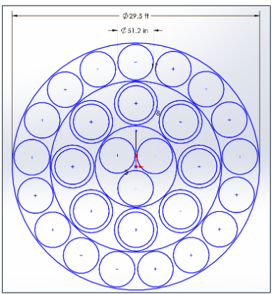
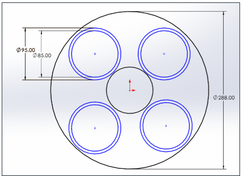

PROPULSION DESIGN
Space Launch Vehicle Design
Conceptual heavy-lift launch vehicle design focused on propulsion architecture, vehicle sizing, engine layout, and system-level trade studies.
Overview
This project was completed in Space Launch Vehicle Design and Analysis. Our team developed a conceptual heavy-lift launch vehicle through a formal Preliminary Design Review and Critical Design Review process. The mission requirement was to deliver a 250,000 lb payload to a 100 nmi by 100 nmi low Earth orbit at 28.5 degrees inclination while meeting man-rating, schedule, budget, and development constraints.
I served as the propulsion engineer for the team. My work centered on the propulsion architecture, but those decisions directly affected the full vehicle design. Propellant choice, engine cycle, engine count, thrust level, nozzle sizing, mixture ratio, Isp assumptions, and TVC layout all fed into stage sizing, vehicle diameter, GLOW, tank sizing assumptions, and overall configuration.
Mission Requirement
Design a non-reusable heavy-lift launch vehicle capable of delivering 250,000 lb to LEO, with a 22 ft diameter by 75 ft payload envelope, man-rating considerations, a $5B development budget, and a roughly 5-year development timeline.
Design Role & Vehicle Impact
Although my formal role was propulsion engineer, propulsion was one of the earliest architecture decisions and carried through the rest of the vehicle. A change in propellant or engine cycle would change Isp, density, mass ratio, tank volume, engine count, nozzle size, and ultimately the diameter and layout of the launch vehicle.
Because of that, my work was not isolated to just “engine selection.” I helped define the assumptions that the rest of the design depended on, including the LOX/methane architecture, oxygen-rich staged combustion cycle, engine count, nozzle packaging, and thrust vector control approach.
Mission & System Requirements
The vehicle was sized around a heavy-lift mission to low Earth orbit. The top-level requirements created a tight systems problem: the vehicle needed very high payload capability while still being man-rated, non-reusable, and developed within a defined cost and schedule envelope.
Payload & Orbit
250,000 lb payload to a 100 nmi by 100 nmi LEO orbit at 28.5 degrees inclination.
Payload Envelope
Payload volume requirement of 22 ft diameter by 75 ft length.
Program Constraints
$5B development budget, roughly 5-year timeline, and 5 to 8 launches before operational missions.
Vehicle Assumption
Two-stage, non-reusable, man-rated heavy-lift launch vehicle.
Architecture Trade Studies
Even though we were leaning toward a SpaceX-style LOX/methane architecture from the beginning, the design still had to be justified against other options. The team compared multiple launch vehicle and propulsion configurations instead of simply assuming the baseline was correct.
The main vehicle configurations considered were a two-stage vehicle, a two-stage vehicle with solid boosters, a two-stage vehicle with liquid boosters, and a three-stage vehicle. The trade criteria included certification complexity, schedule impact, cost per pound, and mass ratio performance.
Configuration Trade Criteria
The main trade study considered certification complexity, schedule impact, cost per pound, and mass ratio performance. This helped connect the architecture decision to more than just raw propulsion performance.
Propellant Trade Study
The propulsion trade compared LOX/RP-1, LOX/LH2, and LOX/methane. LOX/LH2 had the highest Isp, but its low density, handling complexity, and development risk made it a poor fit for the vehicle. LOX/RP-1 had strong density and cost advantages, but lower performance and weaker alignment with the assumed company expertise.
LOX/methane was selected because it gave the best balance of performance, density, operability, cost, and development alignment. This was important because the selected propellant affected not only the engine, but also tank sizing, vehicle geometry, mass ratio, and stage design.
| Property | LOX/RP-1 | LOX/LH2 | LOX/Methane |
|---|---|---|---|
| Stage 1 Isp | 311 s | 450 s | 337 s |
| Stage 2 Isp | 338 s | 450 s | 371 s |
| Propellant Cost | $0.35/lb | $0.85/lb | $0.50/lb |
| Density | ~56 lb/ft³ | ~9 lb/ft³ | ~28 lb/ft³ |
| Cryogenic Handling | Moderate | Extreme | Moderate |
| Expertise Alignment | Low | Low | High |
Propellant trade comparing performance, density, cost, handling complexity, and development alignment for the two-stage launch vehicle.
Selected Propulsion Architecture
The selected architecture used LOX/methane on both stages with an oxygen-rich staged combustion cycle. The decision was not just about copying an existing modern launch vehicle trend. It was selected because it provided strong performance without the density and handling penalties of LH2, while still supporting a compact and reusable engine design logic across both stages.
Propellant
LOX/methane selected for both stages to balance Isp, density, cost, operability, and development risk.
Engine Cycle
Oxygen-rich staged combustion selected for high performance and compatibility with a large methane launch vehicle.
Vehicle Architecture
Two-stage expendable architecture selected over booster-assisted and three-stage concepts.
Design Logic
Common engine family across both stages, with different nozzle expansion choices for booster and vacuum operation.
Mass Ratio & Vehicle Sizing
The selected propulsion architecture fed directly into the mass ratio and vehicle sizing process. Using the Tsiolkovsky rocket equation, the two-stage LOX/methane baseline used a Stage 1 ΔV of 12,760 ft/s and a Stage 2 ΔV of 19,140 ft/s.
With the selected Isp assumptions, the LOX/methane baseline produced a Stage 1 mass ratio of about 3.25 and a Stage 2 mass ratio of about 4.96. Those values directly affected propellant mass, stage sizing, tank volume, and the final overall vehicle configuration.
| Stage | Isp | ΔV | Mass Ratio |
|---|---|---|---|
| Stage 1 | 337 s | 12,760 ft/s | 3.25 |
| Stage 2 | 371 s | 19,140 ft/s | 4.96 |
LOX/methane mass ratio assumptions used to connect propulsion selection to stage sizing and overall vehicle geometry.
Engine Sizing & Nozzle Decisions
I worked through the engine sizing and nozzle packaging decisions for the vehicle. The design used a high chamber pressure methane engine with a common throat sizing basis, while allowing the booster and upper stage to use different nozzle expansions.
The booster nozzle was constrained by engine packaging inside the first-stage diameter. The upper stage had more room to prioritize vacuum efficiency, so it used a larger nozzle expansion ratio. This is a good example of how a propulsion choice turned into a vehicle layout constraint.
Engine Sizing Basis
The propulsion concept used a chamber pressure of 3600 psia, mixture ratio of O/F = 3.40, and an approximately 11 in throat diameter. The booster nozzle was capped around 51.2 in exit diameter for packaging, while the upper-stage nozzle used a larger vacuum expansion.
Stage 1 Engine Layout
The first stage used a clustered engine layout sized around the booster diameter and nozzle spacing constraints. This layout was important because the propulsion bay had to fit the required number of engines while leaving enough spacing for nozzle clearance, TVC motion, structural interfaces, and integration.

Stage 1 engine packaging layout showing the 29.5 ft booster diameter and clustered engine arrangement used to size the propulsion bay and evaluate nozzle spacing.
Stage 2 Engine Layout
The second stage used a smaller clustered layout with a central fixed engine and outer engines arranged around it. The upper-stage layout had different packaging priorities than the booster because vacuum performance and nozzle expansion mattered more, while the stage diameter and engine count were much smaller.

Stage 2 engine layout showing the upper-stage engine arrangement and nozzle packaging within the stage diameter.
Thrust Vector Control Architecture
The engine layouts also tied into the thrust vector control strategy. For the booster, not every engine needed to gimbal. The design used a large clustered engine arrangement where only a subset of engines provided TVC authority, reducing complexity compared to gimbaling the full cluster.
The Stage 1 TVC concept used the middle ring of engines for control authority while the remaining engines stayed fixed for base thrust. This approach helped balance control authority, mechanical complexity, actuator demands, and engine-to-engine interference risk.
| Stage | Total Engines | Gimbaling Engines | Gimbal Capability | Purpose |
|---|---|---|---|---|
| Stage 1 | 28 | 8 middle-ring engines | ±8.3° | Pitch, yaw, and roll authority |
| Stage 2 | 5 | 4 outer-ring engines | ±6.7° | Upper-stage attitude control |
TVC architecture summary showing how the engine layout supported vehicle control without requiring every engine to gimbal.
Engine Design Choices
The engine concept included regenerative cooling through the chamber and nozzle, with film cooling in the highest heat-flux regions. Coaxial swirl injectors were selected to support LOX/methane mixing and combustion stability.
I kept this as a design explanation instead of using a generic internet injector image because the important part for this portfolio is the reasoning behind the choices, not a random diagram from another engine.
Thermal & Injector Approach
The engine concept used regenerative cooling through the chamber and nozzle, film cooling in high heat-flux regions, and coaxial swirl injectors to support methane-oxygen mixing and stable combustion.
Pump & Gimbal Integration
A key integration issue for clustered engines is how much hardware has to rotate with the chamber. The turbopumps were treated as fixed-frame components above the gimbal plane, with flexible high-pressure connections feeding the gimbaling chamber.
This reduced the mass that had to be moved by the TVC actuators, helped with packaging inside the cluster, and reduced interference risk between neighboring engines. It was one of the design choices that connected propulsion hardware to controls and mechanical integration.
Integration Logic
Fixed-frame turbopumps with flexible high-pressure connections allowed the chamber/nozzle assembly to gimbal while reducing rotating mass, simplifying packaging, and limiting engine-to-engine interference in the clustered layout.
Pressurization & Tank Interface
The propulsion architecture also affected preliminary tank pressure assumptions. The design used gaseous oxygen and gaseous methane as pressurants, with pressure levels feeding into MEOP, proof pressure, and burst pressure assumptions for the tanks.
This was important because tank pressure is not just a propulsion detail. It becomes a structures and mass properties input, which is another example of how propulsion decisions carried into the broader vehicle design.
LOX Tank Pressure
Preliminary operating pressure of about 79.7 psia.
Methane Tank Pressure
Preliminary operating pressure of about 59.5 psia.
What I Worked On
- Served as the propulsion engineer for the launch vehicle design team.
- Helped perform early propulsion architecture trades that affected the full vehicle configuration and sizing.
- Compared LOX/RP-1, LOX/LH2, and LOX/methane propulsion options using performance, density, cost, handling, and development-risk criteria.
- Selected a LOX/methane oxygen-rich staged combustion architecture for both stages.
- Performed engine sizing and nozzle rationale using chamber pressure, mixture ratio, throat sizing, packaging limits, and expansion ratio trades.
- Helped determine stage-level engine count, thrust requirements, and engine packaging layouts.
- Developed the TVC architecture using partial engine gimbaling instead of gimbaling the full engine cluster.
- Considered engine cooling, injector design, pump/gimbal integration, and tank pressure assumptions as part of the propulsion system architecture.
Technical Highlights
- Selected a LOX/methane ORSC propulsion architecture for both stages.
- Used a chamber pressure of 3600 psia and mixture ratio of O/F = 3.40 as the engine sizing basis.
- Connected propulsion selection to mass ratio, tank sizing, vehicle diameter, engine count, and overall stage layout.
- Used a 28-engine Stage 1 cluster and a 5-engine Stage 2 layout.
- Designed a TVC approach using selected gimbaling engines instead of gimbaling the entire cluster.
- Balanced thrust, performance, packaging, development complexity, and vehicle integration instead of optimizing only for Isp.
Tools Used
MATLAB, launch vehicle design, propulsion analysis, engine sizing, nozzle sizing, mass ratio analysis, thrust vector control, pressure budgeting, systems engineering, engineering trade studies, PDR/CDR technical review process
Engineering Takeaways
This project helped me understand how much propulsion drives the rest of a launch vehicle. A propellant choice is not just a performance number. It changes density, tank size, mass ratio, engine count, nozzle packaging, stage geometry, and control architecture.
The biggest takeaway was learning how to defend propulsion architecture decisions in a design review format. We had a preferred direction early on, but we still had to compare alternatives and show why the selected architecture made sense for the actual mission, vehicle, schedule, and development constraints.